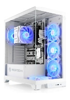

Article 4 ( pc gamer)
Dans le monde jeux vidéo, il est courant d'entendre le terme »PC gamer». Mais qu'est-ce que cela signifie réellement ? Un PC gamer n’est pas simplement un ordinateur capable d’exécuter des jeux vidéo, mais c’est un outil spécialement conçu et configuré pour offrir la « meilleure expérience de jeu » possible. Dans cet article, nous examinerons ce qu'est un PC de jeu, quelles caractéristiques le distinguent d'un ordinateur conventionnel et pourquoi il est devenu une option privilégiée pour les amateurs de jeux vidéo. Rejoignez-nous pour explorer le monde fascinant des PC pour les joueurs !
Retour acceuil
| nom de l'article | image | prix |
pc gamer |  | 1119,99 € |